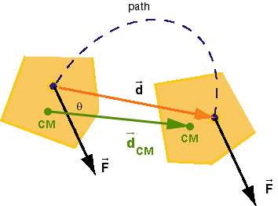
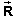

is analogous to that of
work. We just need to substitute the displacement
is analogous to that of
work. We just need to substitute the displacement
 CM of the CM for the displacement
of the
point at which the force is acting. Thus, for a constant
force,
CM of the CM for the displacement
of the
point at which the force is acting. Thus, for a constant
force,
CM-Work Done By A Constant Force: Definition In One, Two, Or Three Dimensions
As stated on Page 1, the definition of CM-work
WCM done by a force is analogous to that of
work. We just need to substitute the displacement
CM of the CM for the displacement
of the
point at which the force is acting. Thus, for a constant
force,
WCM =  CM = FdCM cos
q
CM = FdCM cos
q
where dCM is the magnitude of CM and q is the angle between the force and
displacement vectors.
The scalar product can be evaluated in terms of the scalar components of the vectors. In two dimensions this becomes
CM = Fx
dCM,x + Fy
dCM,y,
In three dimensions, the term Fz dCM,z needs to be added on the right-hand side. For motions in one dimension along an x-axis, only the term Fx dCM,x is needed on the right-hand side.
Example. Figure 1 below shows a five-sided object at
the initial and final moments of a time interval for which we
want to calculate the CM-work done on the object. The figure
shows a constant force , the path of the point on which the force
is acting, the displacement of this point, and the
displacement CM of the CM. The latter is shown in
green.

Figure 1
As the figure illustrates, the displacement of the CM is
different from the displacement of the point at which the
force is acting. Therefore, the CM-work done by the force
is different
from the work in this case.
Comment.
cannot be the
only force that is acting on the object. (The other forces are
not shown.) The object could not be moving along the stippled
path if were
the only force. (Why not?) The fact that other forces are
present has no bearing on how the CM-work done by just is calculated. We
could calculate the CM-work done by the other forces in the same
fashion.
If we add the amounts of CM-work done by all individual forces, we get what is called the net CM-work done on the object.
CM-Work Done By A Variable Force
If a force acting on an object or system is varying during some time interval, the CM-work done by the force during this time interval on the object or system is the sum of all the infinitesimal amounts dWCM of CM-work done during the infinitesimal intervals that make up the finite interval. (A sum of infinitesimals is called an integral.) The path taken by the CM will in general be curved. The infinitesimal amounts of work dWCM need to be calculated for the infinitesimal displacements of the CM that make up this curved path.
The infinitesimal CM-work dWCM done by a
variable force
on an object or system during an infinitesimal time interval
while the object's or system's CM undergoes the infinitesimal
displacement d is defined by
dWCM = d.